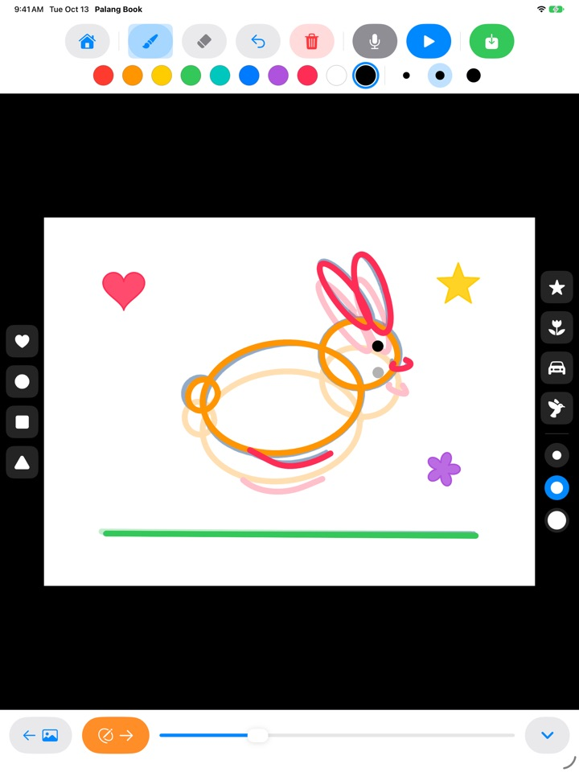
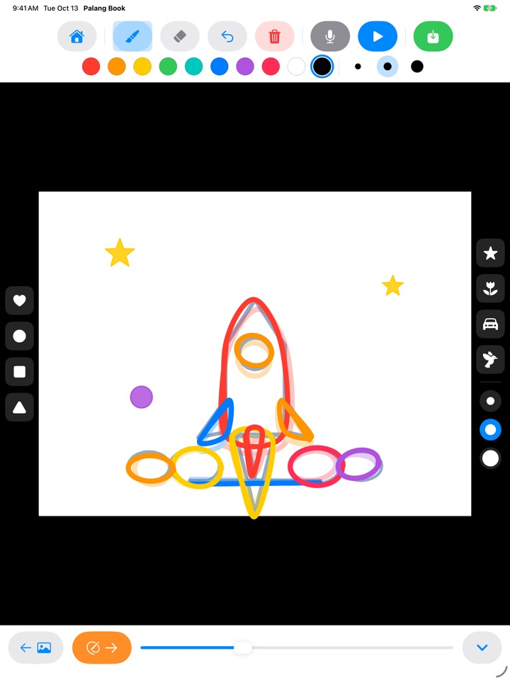
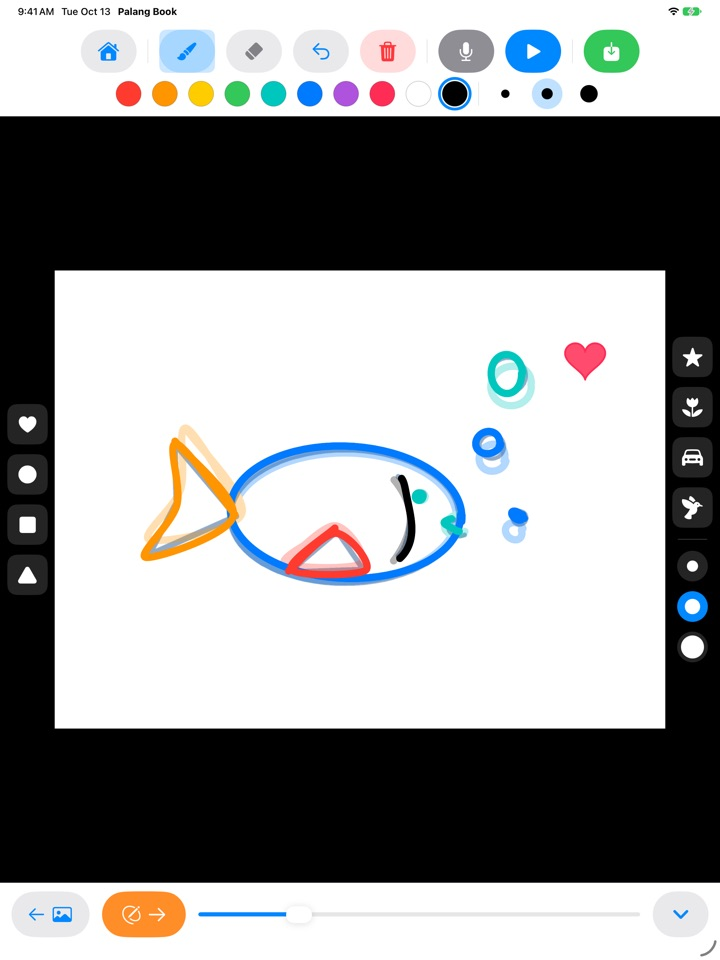
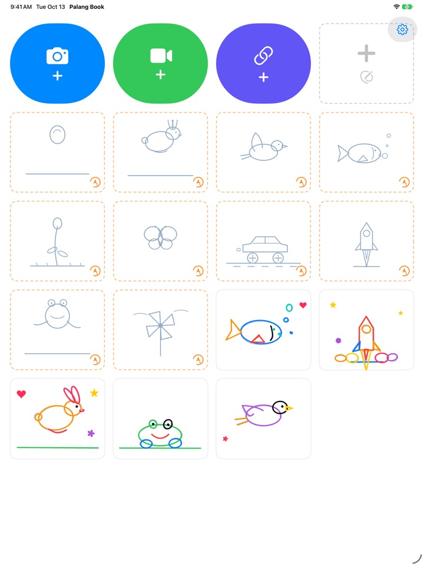

Trace the lines.
Watch them move.
Kids trace a light guide one page at a time. Tap play and the guide disappears, leaving only their own lines in motion. Every button is a picture, so they can do it on their own before they can read.
For iPad. Three trace-along sets are free.

Draw a few pages
Draw something, then tap the orange arrow for the next page. The page before shows through faintly. After two or three pages, tap the blue play button.
Shame for a great drawing to stay still, isn't it?
Animation means drawing almost the same picture over and over with tiny changes, and on their own kids have no idea where to start. Palang Book lays down a light guide that already holds the motion, so all they do is follow the line. The moment they hit play, their drawing moves.
Follow the line, get an animation
A bouncing ball, a hopping bunny, a flying bird, a swimming fish, a blooming flower, a butterfly, a racing car, a rocket, a frog and a pinwheel. Each set has about 20 guide pages.
The previous page shows through faintly to make the next one easy, and on playback the guide disappears so only your child's drawing moves.

Stamps and ten colors
Tap down hearts, circles, squares, triangles, stars, flowers, cars and birds. Stamps and brushes each come in three sizes, with ten colors to pick from.
An eraser and undo make mistakes easy to fix. Draw with a finger or Apple Pencil.

Over your own videos, or on blank paper
Bring in a video you shot or one from Photos and trace over it. Hide the background and only the scenes you drew play back, one after another on white paper. There's also a blank-paper flipbook with no guide at all.
Tap the mic to record your child's voice along with it, then save the finished piece to Photos as a video to share with family.

Three steps to start
- 1
Tap a guide card
The cards with an orange dotted border on the home screen are trace-alongs.
- 2
Draw, then flip
The orange arrow takes you to the next page.
- 3
Tap play
Tap the blue play button and the drawing moves.
What the buttons do
- Orange dotted card
- Start a trace-along
- Gray dotted card
- Blank-paper flipbook
- Blue camera
- Draw over a video you shoot
- Green video
- Bring in a video from Photos
- Indigo link
- Paste a link to a video file
- Orange arrow
- Next page
- Blue play
- Play the animation, tap again to stop
- Curved arrow
- Undo the last line
- Red trash can
- Clear the whole page (undo brings it back)
- Mic
- Record a voice while the animation loops
- Video icon
- Hide the video background (pink stripes means drawings only)
- Green save
- Save to Photos as a video
To delete a work, press and hold its card on the home screen. Its drawings, recording and imported video are deleted with it.
Plenty to try for free. A Lifetime Pass if you love it.
Free
- 3 trace-along sets (ball, bunny, flower)
- Keep 3 works
- Bring in 1 video
- Blank flipbooks up to 10 pages
- Voice recording up to 15 seconds
- Stamps, colors, brushes and saving to Photos
Lifetime Pass
- Every trace-along set, including future ones
- No limits on works, pages, videos or recording time
- No Palang Book card at the end of saved videos
A one-time purchase, not a subscription. Works with Family Sharing on every family iPad.
Videos saved for free end with a short Palang Book card. If you used Palang Book before the Lifetime Pass existed, everything is already unlocked for you.
Questions
How do the guides work?
The light sky-blue lines are the guide. Your child traces over them, and when you tap play the guide disappears and only their lines move. Finish about 20 pages and the animation is done.
I want to play and save just the drawing, without the video.
In a video project, tap the video icon in the top toolbar so it turns pink with stripes. Playback and saving then show only the drawing on a white background. Only the scenes you drew are played, so a few drawings over a long clip make a short animation.
Where does the finished video go?
Tap the green save button at the right end of the toolbar and an mp4 video is saved to Photos. Allow photo access the first time you save.
How do I add a voice?
Tap the mic button to record while the animation loops, then tap stop to finish. Recording again replaces the old take. The voice is included when you save the video.
A video link won't open.
Check your internet connection, and make sure the address points straight to a video file (one ending in .mp4 or similar). Links to pages on video sharing sites can't be opened. Please use videos you made yourself or ones that are free to use.
My palm keeps leaving marks.
The curved arrow removes the last line, and the red trash can clears the whole page (undo brings it back). If it happens a lot, email us and we'll help.
Why is there a math question before the purchase screen?
So kids can't reach the purchase screen on their own. When a child taps something locked, a big padlock appears with a note to show a grown-up, and the purchase screen opens only after a grown-up answers a multiplication question.
How do I restore my purchase?
Tap the gear at the top right of the home screen, choose Lifetime Pass, answer the grown-up question and tap Restore Purchases. You need to be signed in with the same Apple Account you bought it with.
How do I send feedback from the app?
Tap the gear on the home screen and choose Send Feedback. You can attach a screenshot, and leave a name and email if you'd like a reply. Please have a parent send feedback.
Do you collect any information about my child?
No. Palang Book collects no personal information, and drawings and recordings stay on your iPad. See the Privacy Policy for details.
Questions or problems? Email mizzking75@gmail.com. We usually reply within 2 to 3 days.